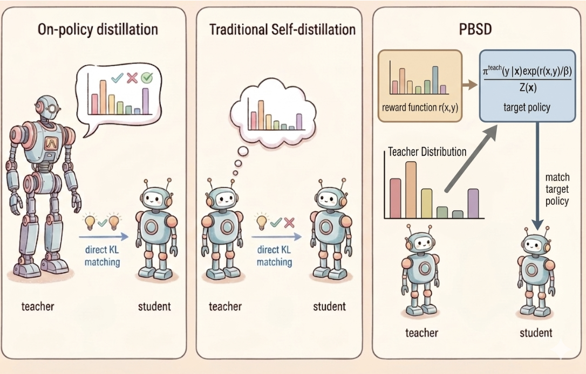
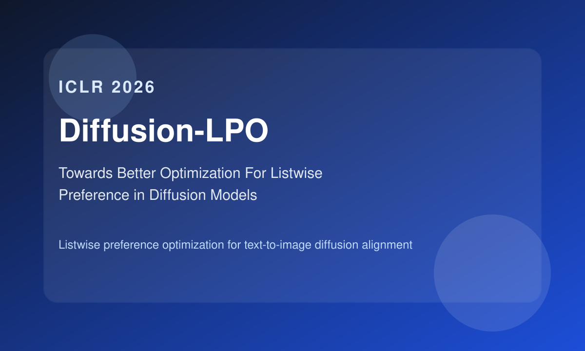

Student Researcher · Sunnyvale, CA
- Coding Agents
- Agent Post-Training
- Recursive Self-Improvement
I am currently a Ph.D. candidate in Statistics at The Pennsylvania State University and am honored to be advised by Prof. Lingzhou Xue. I earned my master's degree from Penn State in 2025 and my bachelor's degree in Statistics from Nankai University in 2023. I was also fortunate to complete my undergraduate thesis under the supervision of Prof. Changliang Zou.
Student Researcher · Sunnyvale, CA
Research Scientist Intern · Menlo Park, CA
Research Scientist Intern · San Jose, CA
Research Scientist Intern · Seattle, WA
Intelligent Multimedia Group Intern · Beijing, China
See Google Scholar for an updated list of publications.

